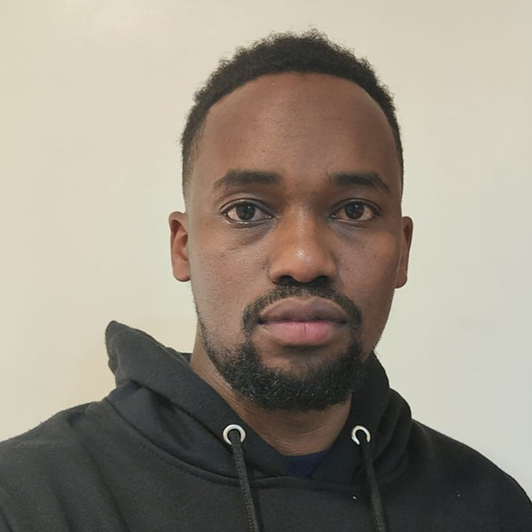

01 / SUPPORT
IT Support & Consulting
Remote, hybrid, and on-site troubleshooting, user support, IT planning, and systems maintenance.
IT CONSULTANT · SYSTEMS ADMINISTRATOR · WEB DEVELOPER
I help organizations work smarter through reliable IT support, cloud and business applications, secure infrastructure, and practical web solutions.

I am an IT professional focused on systems administration, cloud productivity platforms, network support, cybersecurity, and web development. My approach is practical: understand the challenge, choose the right solution, implement it carefully, and support it over time.
Through my work with GenerativeTek, I contribute to technology solutions that help organizations improve productivity, strengthen security, and build a stronger digital presence.
Explore GenerativeTek ↗Technology services aligned with real operational needs, based on GenerativeTek's published service areas.
Remote, hybrid, and on-site troubleshooting, user support, IT planning, and systems maintenance.
Microsoft 365, Google Workspace, business email, collaboration tools, licensing, and migration.
Endpoint protection, security configuration, network troubleshooting, monitoring, and safer access.
Responsive business websites, CMS-based sites, e-commerce experiences, hosting, and maintenance.
Server administration, hardware supply, software deployment, backup planning, and IT operations.
Solutions designed around usability, reliability, security, and business goals.
Selected work and case studies published on GenerativeTek's website. Open each project to view its public details.
Portfolio descriptions summarize public GenerativeTek case studies and service information. They do not imply that every project was completed solely by Setako Vedaste.
View GenerativeTek website ↗Adapt this section to highlight the tools and technologies you use most confidently.
Interested in IT opportunities, collaboration, or a technology project? Get in touch.
For a personal portfolio, replace or add your preferred personal email, phone number, and LinkedIn profile.